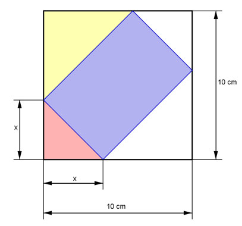
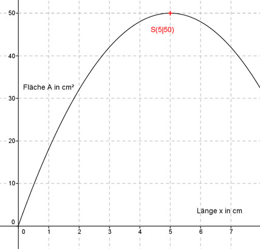

Aufgabe 120 Wie groß ist die größtmögliche blaue Rechteckfläche A?  Blaue Fläche A = 10 cm*10 cm - 2*gelbe Fläche - 2*rote Fläche Die gelbe und die rote Fläche sind jeweils rechtwinklige Dreiecke. (10 - x)(10 -x) Gelbe Fläche = ------------------ 2 x * x Rote Fläche = ---------- 2 Blaue Fläche: (10 - x) * (10 - x) x * x A = 10 cm * 10 cm - 2 * --------------------- - 2 * -------- 2 2 Blaue Fläche A = 100 cm² - 100 + 20x - x2 - x2 A(x) = -2x2 + 20x Dies ist die Funktionsgleichung einer nach unten geöffneten, gestreckten Parabel, deren höchster Punkt der Scheitelpunkt ist. A(x) = -2x2 + 20x | :(-2) A(x) - ----- = x2 - 10x 2 Quadratische Ergänzung: A(x) - ----- = x2 - 10x + 25 - 25 2 mit x2 - 10x + 25 = (x - 5)2 A(x) - ----- = (x - 5)2 - 25 |*(-2) 2 A(x) = -2(x - 5)2 + 50 Scheitelpunkt abgelesen: S(5|50) Die Scheitelpunktkoordinaten bedeuten: Ist die Länge x = 5 cm entsteht die größte Fläche A = 50 cm². 